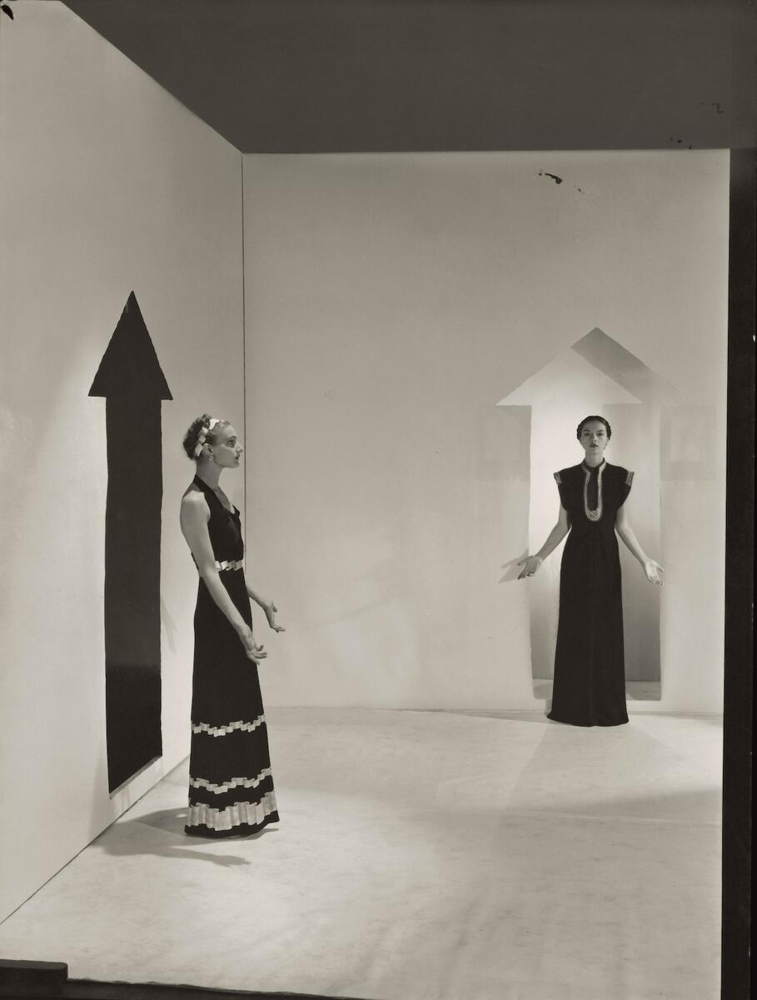

At the Bowes Museum in County Durham, a new exhibition traces the arc of Vivienne Westwood's extraordinary career — not through the lens of the fashion establishment, but through the wardrobe of one devoted collector who spent three decades acquiring the pieces that defined an era.
There are fashion exhibitions that approach their subjects with the careful neutrality of an auction catalogue, and there are exhibitions that feel like entering someone’s obsession. “Vivienne Westwood: Rebel – Storyteller – Visionary,” which opens this spring at the Bowes Museum in County Durham, belongs firmly to the second category. Its organising principle is not chronological nor thematic in the conventional sense. It is personal. The collection at its core was assembled over thirty years by a science teacher whose dedication to Westwood’s work became a kind of parallel autobiography — each purchase a marker of time, taste, and the particular conviction that fashion can carry the weight of ideas.
The Bowes Museum itself is an improbable setting, which is part of the point. A French château deposited in the middle of northern England by a nineteenth-century collector and his wife, it was built to house art far from the centres that typically claim it. There is something fitting about Westwood — who spent a career insisting that fashion belonged in the conversation alongside painting, sculpture, and political thought — being shown in a building that made the same argument about geography and access to culture.
The collector as curator
What distinguishes this exhibition from previous Westwood retrospectives is its point of view. The pieces on display span roughly twenty years, from the mid-1980s to the early 2000s — the period in which Westwood moved from punk provocation to something more layered and historically engaged. A pink tartan mohair wraparound jacket from the Anglomania collection of 1993 hangs near a faux leopard princess coat from Voyage to Cythera, the 1988 collection that announced Westwood’s deep fascination with eighteenth-century dress. The juxtaposition tells you something about the designer’s range, but it tells you more about the collector’s eye — the ability to see continuity where the fashion calendar insisted on rupture.
Additional loans from Manchester Art Gallery, Fashion Museum Bath, and several private collectors fill out the narrative. But the heart of the show remains one person’s sustained attention to another person’s work. In an industry that fetishises novelty above all, this kind of long-term devotion is itself a radical act.

Photography courtesy of Wallpaper* / The Bowes Museum
Punk was never the whole story
The popular narrative around Westwood tends to compress her into a single chapter: the Sex shop on the King’s Road, the bondage trousers, the safety pins that became a universal shorthand for rebellion. It is a good story, but it obscures everything that followed. The Bowes exhibition offers a corrective. Here, the punk years are present but not dominant. The emphasis falls on the collections that revealed Westwood as a serious student of historical tailoring — someone who could cut a corset with the precision of a Georgian dressmaker while loading it with references to class, sexuality, and the politics of the body.
The Harris Tweed pieces from the 1987 collection are shown with a care that invites close looking. The weave itself becomes a subject — the relationship between craft tradition and avant-garde intention, the way a fabric developed for Highland weather can be recontextualised as high fashion without losing its essential character. Westwood understood materials the way an architect understands concrete: not as surface but as structure.
“The exhibition makes a quiet argument that the most radical thing a designer can do is take history seriously — not as costume, but as living conversation.”
Dressing as argument
What the Bowes show captures with particular clarity is Westwood’s insistence that getting dressed is a political act. The mini-crini — her compressed, reimagined crinoline from the 1985 collection — was not a costume but an argument about the relationship between women’s bodies and the structures, literal and social, built around them. The platform shoes that sent Naomi Campbell tumbling on the runway in 1993 were not a gimmick but a provocation about height, visibility, and the risks women are expected to take in the name of beauty.
Seeing these pieces in person, away from the runway photographs and the mythology, is a different experience. The garments are smaller than you expect, more finely made. The stitching on the corsets is meticulous. The draping on the evening gowns from the Gold Label collections reveals a technical facility that tends to get lost in the noise of Westwood’s public persona. She was, before anything else, an extraordinary maker of clothes.
Why this matters now
Westwood died in December 2022, and the years since have brought the predictable cycle of tribute, reassessment, and commercial legacy management. What the Bowes exhibition offers is something rarer: a view of the work that is neither reverent nor revisionist, but simply attentive. The collector whose wardrobe forms its core was not buying for investment or status. They were buying because the clothes meant something to them — because each piece represented a moment when fashion and ideas collided with enough force to change the shape of both.
The exhibition runs until September 2026, which gives it the rare luxury of time. It is worth visiting more than once, if you can. The garments shift depending on the light, the crowd, your own mood. The pink tartan jacket that reads as playful on a Tuesday afternoon becomes something fiercer on a grey Saturday morning. This, too, is part of Westwood’s genius — she made clothes that kept thinking long after you stopped looking at them.
The Bowes Museum sits at the end of a long drive in Barnard Castle. You arrive, as with all the best cultural experiences, wondering whether the journey was worth it. You leave knowing that the question was never relevant.